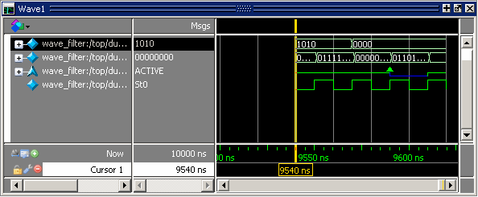

Call up and view
saved waveform sections with the following procedure.
Procedure
- Open the
saved .wlf file by selecting to
open the Open File dialog and set the “Files of type” field to Log Files
(*.wlf). Then select the .wlf file
you want and click the Open button. Refer to Opening Datasets for
more information.
- Select the top instance in
the Structure window
- Select .
- Scroll to the simulation time
that was saved. (Figure 1)
Figure 1. Wave Filter Dataset 